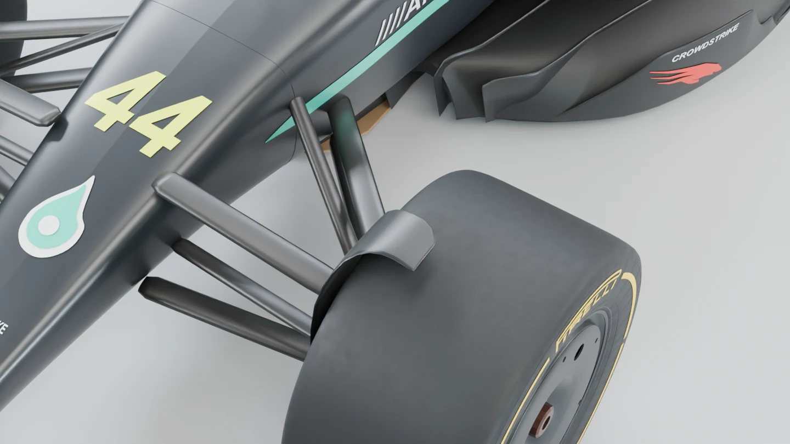

Formule 1 · Blender
Mercedes-AMG W14
Lewis Hamilton n° 44 · Grand Prix de Monaco 2023

La W14 de Monaco
À Monaco, en mai 2023, Mercedes abandonne les pontons étroits du début de saison. Sur cette version, leur partie supérieure s’élargit puis descend vers le train arrière. L’équipe relève aussi l’ancrage avant du triangle supérieur de suspension.




Reconstruction à partir de photographies publiques. Les dimensions non publiées, les conduits internes et le dessous du plancher sont estimés. Le débattement de 22° du DRS est illustratif.
Formula 1 · Tech Tuesday